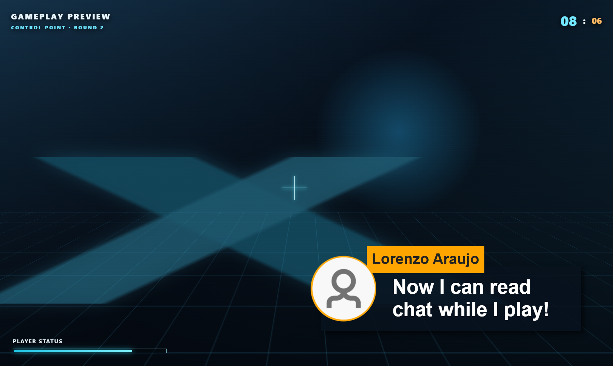
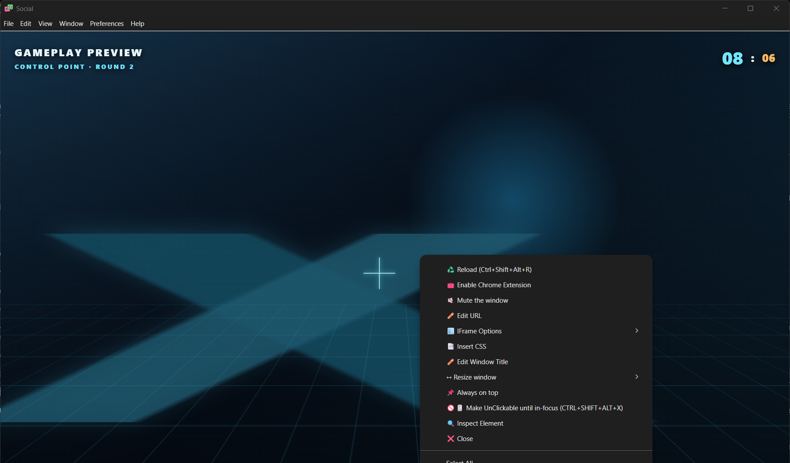
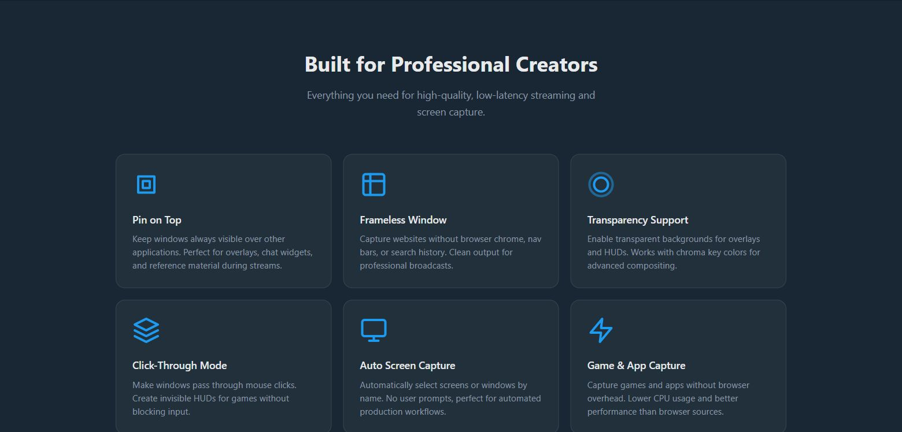

可以，使用桌面叠加层窗口即可
Social Stream 可以作为透明、始终置顶的窗口显示在游戏上方。这是单独的桌面窗口，不是向游戏 HUD 注入内容。
需要桌面容器应用。 使用 Social Stream Ninja 独立应用 或 Electron Capture。浏览器扩展和 OBS 浏览器来源本身无法创建系统级点击穿透窗口。
| 选项 | 最适合的情况 | 提供的功能 |
|---|---|---|
| Social Stream 独立应用 | 您已在 SSApp 中捕获聊天，并希望以最少步骤完成设置。 | 透明弹出窗口、始终置顶、调整大小和点击穿透。 |
| Electron Capture | 您需要精确尺寸和位置、可重复使用的启动命令，或专用叠加层容器。 | 无边框透明、置顶、点击穿透、显示器选择和命令行控制。 |
| 仅普通浏览器或 OBS | 需要将聊天显示在直播中，而不是仅在自己的显示器上私下查看。 | 无法可靠地实现系统级透明或鼠标点击穿透。 |
视频演示
此旧视频展示透明、始终置顶、点击穿透的聊天设置。当前版本的应用界面可能有所不同。
选择聊天视图
- 直播聊天／停靠面板： 显示持续更新的合并聊天。游戏时通常最适合使用此选项。
- 精选聊天叠加层： 显示从停靠面板选中的一条消息。只想显示重点消息时使用。
- 模板或自定义叠加层： 也可以使用，只要页面支持透明背景。
使用与当前 Social Stream 设置相同的会话 ID。在 Social Stream 设置面板中，打开所选视图的选项并启用 强制透明背景。生成的 URL 应包含 transparent.

方法 1：Social Stream 独立应用
- 安装并打开 独立桌面应用。正常启用您的聊天来源。
- 在 Social Stream 设置面板中找到 直播聊天 或 精选聊天叠加层.
- 打开其选项并启用 强制透明背景.
- 点击生成的停靠面板或精选链接 从独立应用内部。SSApp 会将其作为独立叠加层窗口打开。
- 锁定前先移动窗口并调整大小。右键点击叠加层以选择预设尺寸，并选择 始终置顶.
- 完成定位后，再次右键点击并选择 设为不可点击。鼠标点击将穿透到游戏。

SSApp 快捷键
| Windows / Linux | macOS | 操作 |
|---|---|---|
Ctrl+Shift+Alt+X |
Command+Shift+Option+X |
切换鼠标点击穿透，以便再次与叠加层交互。 |
Ctrl+Shift+Alt+R |
Command+Shift+Option+R |
重新加载当前获得焦点的叠加层窗口。 |
定位提示： 透明区域可能难以拖动。定位时保持停靠面板菜单可见，使用操作系统的窗口移动快捷键，或使用 Electron Capture 的 --x 和 --y 选项来精确定位。
方法 2：Electron Capture
Electron Capture 是独立的免费开源应用，可以将 Social Stream URL 装入透明桌面窗口。如果您只需要专用叠加层窗口，它通常是更简单的选择。
- 复制生成的 Social Stream 停靠面板、精选、模板或自定义叠加层 URL。
- 确保其中包含
&transparent。如果 URL 尚无问号，请使用?transparent. - 在 Electron Capture 中打开 URL。
- 右键点击其窗口并启用 始终置顶.
- 移动并调整其大小，然后启用 设为不可点击.
- 使用
Ctrl+Shift+Alt+X（或Command+Shift+Option+X，在 macOS 上使用）以便稍后切换点击穿透。

通过命令行启动 Electron Capture
便携式 Windows 版本最容易自动化。替换 YOUR_SESSION_ID 并根据显示器调整尺寸和位置。
连续聊天停靠面板
.\elecap.exe --url="https://socialstream.ninja/dock.html?session=YOUR_SESSION_ID&transparent&compact&hidemenu" --width=520 --height=760 --x=1380 --y=80 --pin --unclickable --title="SSN Chat"仅精选聊天
.\elecap.exe --url="https://socialstream.ninja/featured.html?session=YOUR_SESSION_ID&transparent" --width=700 --height=500 --x=1160 --y=80 --pin --unclickable --title="SSN Featured"macOS 和 Linux
# macOS
"/Applications/elecap.app/Contents/MacOS/elecap" --url='YOUR_OVERLAY_URL' --width=520 --height=760 --pin --unclickable
# Linux AppImage; replace the filename with the version you downloaded
./elecap-VERSION-x86_64.AppImage --url='YOUR_OVERLAY_URL' --width=520 --height=760 --pin --unclickable| 选项 | 用途 |
|---|---|
--url | 完整的 Social Stream 叠加层 URL。请用引号包围，因为其中包含 & 字符。 |
--width, --height | 初始窗口尺寸，单位为像素。 |
--x, --y | 虚拟桌面中的初始位置。对于放在主显示器左侧或上方的显示器，负坐标可能有效。 |
--monitor=0 | 当显示器编号比桌面坐标更方便时，使用从 0 开始的显示器编号。 |
--pin | 以始终置顶方式启动。 |
--unclickable | 以点击穿透模式启动。使用前请记住恢复快捷键。 |
--css="C:\path\chat.css" | 注入本地 CSS 文件以进行高级样式设置。 |
--multiinstance | 需要多个独立叠加层时，运行单独的 Electron Capture 进程。 |
参见 Electron Capture 的 完整命令行参考 了解其他参数。
--node 对于普通 Social Stream 叠加层并非必需。 保持关闭，除非页面明确需要屏幕捕获或其他提升权限的 Electron 功能。
实用叠加层 URL 选项
| URL 选项 | 使用 |
|---|---|
transparent | 移除页面背景并请求透明桌面窗口。 |
compact | 使用更紧凑的停靠面板布局。 |
hidemenu | 设置完成后隐藏停靠面板工具栏。 |
scale=0.85 | 缩小支持的叠加层，而不改变窗口尺寸。 |
limit=15 | 在支持的页面上限制保留的消息数量。 |
hidesource | 隐藏停靠面板中的平台来源标签或图标。 |
chroma=0000 | 另一种透明背景模式；在停靠面板的普通 transparent 模式隐藏滚动条时很有用。 |
关于模板、自定义 CSS、字体和更多 URL 控件，请参见 叠加层自定义指南.
仅在自己的显示器上显示，不放入直播
只有直播软件捕获游戏或游戏窗口而非整个显示器时，叠加层才会保持私密。
- 不要将此叠加层 URL 添加为 OBS 浏览器来源 ，如果不想让观众看到它。
- 在 Windows 上，优先使用 OBS 的 游戏捕获 来源，并将目标设为游戏。
- 将 OBS 的 捕获第三方叠加层（例如 Steam） 选项保持关闭，除非您已测试确认它不会包含此窗口。
- 避免使用 显示器捕获 用于此工作流程。它会捕获整个显示器，包括聊天叠加层。
- 正式直播前，录制一段简短的本地视频并回看。不同捕获方法和游戏的表现各有不同。
macOS 和 Linux 限制： OBS 游戏捕获仅适用于 Windows。如果您的设置必须捕获整个显示器，屏幕叠加层也会被捕获。请使用另一台显示器，或使用能排除叠加层的窗口／应用捕获方法，然后通过录像验证。
重要限制
- 无边框或窗口化全屏是可靠的游戏模式。 独占全屏游戏可能盖住所有普通桌面窗口，包括始终置顶的叠加层。
- 桌面应用必须保持打开。 关闭 SSApp 或 Electron Capture 会关闭本地叠加层。
- 会话必须匹配。 使用错误会话 ID 的停靠面板或精选 URL 会一直为空。
- 精选聊天不是完整消息流。 只有在停靠面板中选择消息后，它才会显示该消息。
- 点击穿透会禁用鼠标交互。 再次尝试右键点击窗口前，请使用恢复快捷键。
- 有些游戏和反作弊系统限制叠加层。 不要尝试绕过游戏的安全控制。
- 透明效果因操作系统和图形设置而异。 如果透明区域显示为白色或黑色，请更新桌面应用和显卡驱动。
- 显示器捕获包含您看到的所有内容。 如果捕获软件无法将游戏与整个显示器画面分开捕获，就无法保证该叠加层的私密性。
快速检查清单
- 聊天正在到达 Social Stream。
- 叠加层 URL 使用正确的会话 ID。
- URL 包含
transparent. - 桌面容器窗口已置顶于游戏上方。
- 仅在定位完成后启用点击穿透。
- 如果独占全屏隐藏叠加层，游戏应使用无边框或窗口化全屏。
- OBS 捕获游戏／窗口，而不是整个显示器。
- 测试录像确认观众看不到私有叠加层。